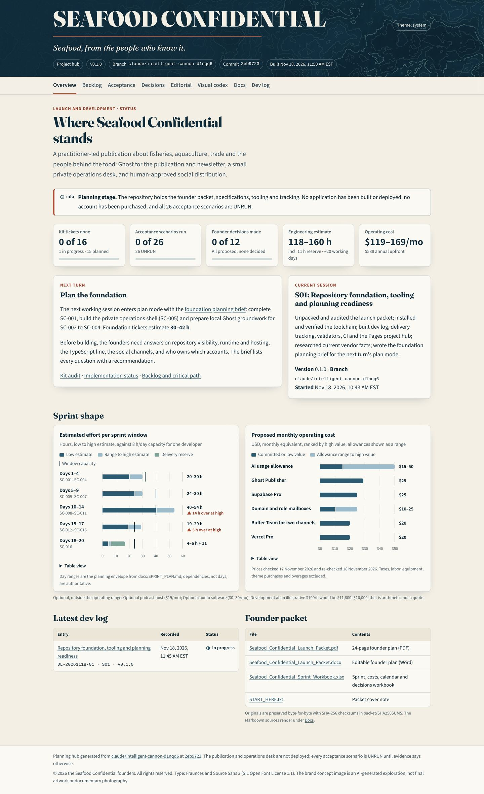
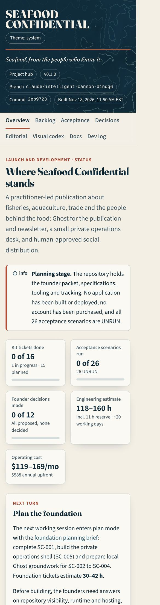
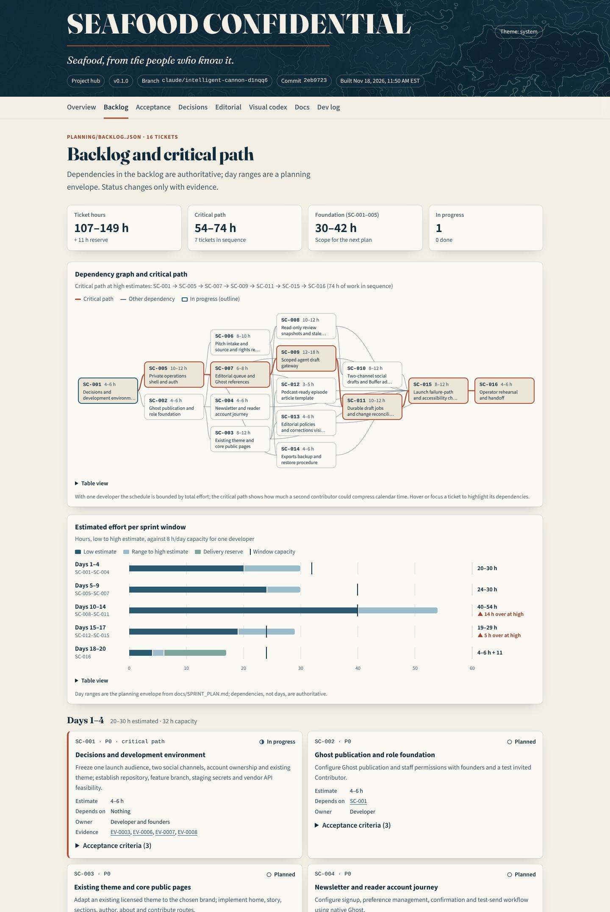
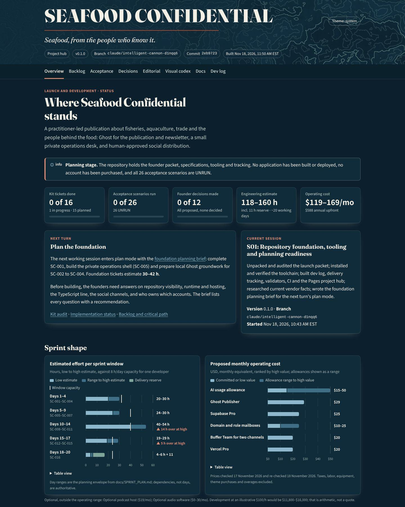

| Entry | DL-20261118-01 |
|---|---|
| Session | S01, turn 1 |
| Version | 0.1.0 |
| Branch | claude/intelligent-cannon-d1nqq6 |
| Base commit | 2eb97235e0ba |
| Started | Nov 18, 2026, 10:43 AM EST |
| Recorded | Nov 18, 2026, 12:05 PM EST |
| Tickets | SC-001 |
| Workstreams | WS-REPO, WS-ENV, WS-TRACK, WS-HUB, WS-PLAN |
| Status | complete |
Repository foundation, tooling and planning readiness
Summary
The launch packet that arrived as a zip is now a working repository. The development kit sits at the root, and the founder originals are preserved with checksums. The tooling validates the kit's own consistency on every push. A dev log and an evidence-backed tracking system record every turn. A branded project hub publishes each branch to GitHub Pages. Every tool and dependency the foundation needs was installed and verified in this cloud environment, including local Supabase and local Ghost. Current vendor facts were researched, and several of them change the foundation design. The foundation planning brief is ready for the next turn's plan mode. No application exists yet, and all 26 acceptance scenarios remain UNRUN.
What changed
Packet and structure
- The kit was unpacked at the root (32 files, byte-identical: EV-0001). The PDF, DOCX, XLSX and cover note sit in
packet/withSHA256SUMS. The zip was removed from the working tree and is recoverable from2eb9723. - The README keeps the original description and adds navigation. The kit README is preserved as
docs/DEVELOPMENT_KIT.md.AGENTS.mdandCLAUDE.mdeach gain an appended, dated conventions section; the kit's text is unchanged. - SC-001 moved from
plannedtoin_progress: repository, dev environment and vendor feasibility work started, founder decisions still outstanding.
Tracking and validation
devtrack/: sessions, workstreams and append-only evidence, each with a JSON Schema.devlog/: this log.docs/IMPLEMENTATION_STATUS.mdhas a generated, deterministic status block, and CI fails when it is stale.pnpm validateruns 9 checks. They cover backlog integrity and CSV parity, the calendar, decisions, the acceptance matrix, the agent contract against 17 example requests, the fixture guard, packet checksums, Markdown links and the evidence rules. 26 tool tests prove the checks catch what they exist for.
Environment and tooling (your mid-turn request)
tools/bootstrap/install-dev-tools.shinstalls pinned tools and verifies each against a SHA-256 hash: actionlint 1.7.12, gitleaks 8.30.1, shellcheck 0.11.0, firebase-tools 15.36.0, vercel 66.1.0, gscan 6.7.0, and Node 24 LTS side-by-side.- Repo dependencies are pinned exactly: Supabase CLI 3.2.0, Playwright 1.63.0, axe, Ajv, marked, yaml, Prettier and the OFL fonts. pnpm 12 runs with supply-chain gates.
- At your second request, the recommended foundation libraries were also pre-installed (TypeScript 6.0.3, typescript-eslint, Vitest, Playwright Test, OpenTelemetry, pino) and Ghost's MIT Source theme was validated with gscan (EV-0018).
- Docker is running with a registry mirror. Supabase local stack images, Ghost 6.78.0 and Mailpit are pulled and verified. A Next.js 16.4.6 probe with the foundation libraries builds, which also warmed the package store. glslang is installed for shader validation.
Project hub and previews
pnpm hub:buildproduces 44 pages: overview, backlog with dependency graph and critical path, acceptance, decisions, editorial plan, visual codex, rendered docs, dev log and evidence. The masthead is a WebGL2 "bathymetry" contour field with fallbacks. The pages carry a strict CSP andnoindex, and self-host their fonts..github/workflows/pages.ymlpublishes every branch togh-pages/branches/<slug>/, with a root index of previews and a/latest/redirect.ci.ymlvalidates, tests, builds, lints, scans for secrets, validates the shaders, and uploads screenshots and axe results as artifacts.brand/tokens.jsonis the single source of brand colour roles. The build fails if a declared text pair drops below WCAG AA. Asc-visual-codexproject skill encodes the system for future visual work.
Planning
- Kit audit: 17 findings, including the social-channel conflict, the agent contract gaps, the public-repository mismatch, tight capacity and the brand contrast facts.
- Foundation planning brief: scope, current platform facts, verified feasibility, proposed architecture (middleware, telemetry, security, testing), 16 questions with recommendations, and a phase plan.
- ADR-002: the repository-scope engineering decisions.
Decisions
| Decision | Rationale |
|---|---|
| Kit at the repository root | Every path inside the kit's documents stays valid |
| Node 24 LTS, not 26 | Ghost 6.78 (^22.23.5 || ^24.22.3) and gscan (^22.17 || ^24) exclude Node 26 (EV-0009) |
pnpm 12 with allowBuilds, a 1-day minimumReleaseAge and trustPolicy: no-downgrade |
Supply-chain protection after the 2025 npm compromises; both gates proved their value in the probe (EV-0008) |
Previews from a gh-pages branch rather than Actions artifacts |
The Actions github-pages environment only deploys the default branch, which would block previews of unmerged session branches |
| No Dependabot version-update PRs | You work from the latest open PR, and bot PRs would pollute that list. Security alerts can stay on at the repository level |
| Interim proprietary licence | The founders own the material; open licensing is their decision (Q14) |
| Derived accessible colour steps | Rust on salt is 4.46:1 and sea glass on salt is 2.36:1; brand values stay unchanged |
| HTML/CSS bar charts | SVG text scaled down to about 9.5 px in two-column layouts; HTML keeps real type sizes |
| Product choices stay Proposed | Hosting, TypeScript line, Buffer path, telemetry backend and repository visibility are listed in the brief for the founders |
Problems and resolutions
| Problem | Cause | Resolution |
|---|---|---|
docker pull returned 429 Too Many Requests |
Docker Hub's anonymous rate limit on the shared egress address | Registry mirror mirror.gcr.io in /etc/docker/daemon.json (EV-0004) |
| Ghost exited with "error code -97" | Ghost binds IPv6 :: by default; the container has no IPv6 (EAFNOSUPPORT) |
server__host=0.0.0.0; Ghost answered in about 4 s (EV-0007) |
| The Next.js template failed to install | pnpm's trust policy flagged undici-types@6.21.0 via the template's @types/node@^20 |
Align @types/node with the runtime (^24) rather than weakening the policy |
@supabase/supabase-js 2.119.1 refused |
Published 14:42 UTC that day; under the 1-day release age | Use 2.119.0; the gate works as designed |
| The kit's CSVs would be rewritten | They use CRLF; the default eol=lf normalization would alter them |
*.csv -text in .gitattributes; the ticket CLI preserves CRLF |
| Ajv strict mode rejected the kit's contract | required inside if/then without a redeclared property (valid JSON Schema) |
Relaxed only strictRequired; noted as audit finding K-06 instead of editing the kit |
| axe: scrollable regions unreachable by keyboard | Wide tables and code blocks overflow on phones | Focusable named regions (WCAG 2.1.1) |
| axe: a swatch label at 2.87:1 | Ink on rust | Chip text is now chosen by computed contrast |
| Chart text too small or too large | SVG text scales with the viewBox | Bars rebuilt in HTML/CSS |
24 <h1>s on the launch-packet page |
One top-level heading per PDF page | Multi-H1 documents are demoted under a single page title |
| Pages simulation failures | A fixed ../pages worktree path; hub:check rejecting the intentional previews link |
mktemp worktree; a single exemption via build.json (EV-0013) |
| CI run 1 failed in the tool bootstrap (actionlint not found) | log() wrote to stdout inside fetch(), whose output is captured as the download path; with a cold cache the log line corrupted the path, and tar && install hid the failure from set -e |
Messages go to stderr, inherit_errexit, separate steps, a version check after every install; verified in a clean ubuntu:24.04 container, including a negative run (EV-0015). Local runs had passed only because the cache was warm |
| Two skills cite files that don't exist | shader-projects-assistant and dev-blog-automator ship only SKILL.md (template TODOs remain) |
Used Khronos glslangValidator instead; reported as an agent-setup improvement |
Evidence
EV-0001 to EV-0018 are in the evidence log. All passed except EV-0009 and EV-0010, which are informational. EV-0015 records the CI defect found after the first push and its verified fix. EV-0016 records the first real Pages publication to gh-pages. EV-0017 records CI passing on GitHub after the fix, including 44/44 clean renders on the runner. EV-0018 records that the recommended foundation libraries install and type-check, and that the Source theme passes gscan.
| Screens (final verification round, EV-0012) | |
|---|---|
 |
 |
 |
 |
The visual codex page is in hub-visual-codex-desktop.jpg.

Risks and open questions
- Founder decisions D01–D12 are all Proposed. SC-001 can't complete without them.
- The repository is public while the kit assumes a private one (Q1). This decides the theme licence options and who can read the hub.
- GitHub Pages must be enabled once (Settings → Pages →
gh-pages/ root) before the previews are served. - Platform changes since the packet affect SC-005, SC-009 and SC-010: Next 16
proxy.ts, Supabase keys and grants, and Buffer API-key posts bypassing approval. - The workbook can't be regenerated here. The repository JSON is the working record until Q12 is decided.
- Docker is not running by default in new cloud sessions, and pulled images don't persist when the container is reclaimed.
Next actions
- Enable GitHub Pages from the
gh-pagesbranch, then open the preview from the PR. - Founders: answer the questions in the planning brief, at minimum Q1 to Q4 and Q8 to Q9, plus decisions D01, D04, D05, D06 and D10.
- Next turn: plan mode on the brief, then build foundation phases F0 to F2 (desk scaffold, database with grants, RLS and pgTAP) on a new session branch.
Save the environment setup scriptDone: saved to the cloud environment and guarded to run only when this repository is checked out. It is unproven until a fresh session builds a new container.- Agent setup: merge the
sc-visual-codexentry into your shared visual codex skill, which isn't installed in this cloud environment, and complete the shader and dev-blog skills' missing scripts and references.
Evidence referenced
| ID | Result | Summary | Observed |
|---|---|---|---|
| EV-0001 | pass | Launch packet unpacked byte-identical; uploaded files equal the zip contents | verified 32 files byte-identical; mismatches: none. Upload SHA-256 values equal the zip members (START_HERE cdc26087…, PDF 98c02e8c…, DOCX 9945ea43…, XLSX 1950ec5f…). |
| EV-0002 | pass | PDF and DOCX founder packet carry the same text as docs/LAUNCH_PACKET.md | DOCX similarity 0.9968 (differences: punctuation spacing, title block, image alt text). PDF similarity 0.9520 (differences: running headers/footers and table-cell reflow from layout extraction). No substantive wording differences found. 24 pages; producer LibreOfficeDev 26.8. |
| EV-0003 | pass | Sprint workbook formulas and cached values reconcile with the JSON planning sources | 16 tickets with identical ids, owners, dependencies and hour ranges; totals 107–149 h + 11 reserve = 118–160 h; costs: vendor base $94, operation $119–169/mo, with podcast $138–218/mo, annual upfront $588; 6 editorial weeks; 12 decisions all Proposed; no formula error values. Note: workbook statuses use Proposed/Ready/In progress/Blocked/Done while BACKLOG.json uses planned; the workbook is not regenerable here because planning/build_workbook.mjs depends on the proprietary @oai/artifact-tool runtime. |
| EV-0004 | pass | Docker daemon runs in cloud sessions; Docker Hub anonymous pulls are rate limited; mirror.gcr.io resolves it | First pull failed at 15:57:28Z: '429 Too Many Requests' from registry-1.docker.io. With the mirror both images pulled (ghost digest sha256:baa6dbff…). public.ecr.aws and ghcr.io (used by Supabase CLI) were reachable without a mirror. |
| EV-0005 | pass | Pinned developer tools installed by tools/bootstrap/install-dev-tools.sh with checksum verification | Installed: actionlint 1.7.12, gitleaks 8.30.1, shellcheck 0.11.0, firebase-tools 15.36.0, vercel 66.1.0, gscan 6.7.0 (npm global); Node 24.22.3 present at /opt/node24 (default node 22.23.5 unchanged); glslang 15.1.0 via apt. Re-run is idempotent. shellcheck: clean after fixing SC2015. |
| EV-0006 | pass | Local Supabase stack starts in cloud sessions with pgTAP and the Supabase roles available | Stack healthy after 67 s (first run including image pulls): postgres 17.12.0.000, gotrue v2.198.0, postgrest v16.5, realtime v2.167.0, storage-api v1.96.0, kong 2.8.1, mailpit v1.31.3, studio, postgres-meta v0.100.0. Extensions available: pgtap 1.3.3, pg_cron 1.6.4, pg_net 0.20.4, pgsodium 3.1.8, supabase_vault 0.3.2. Roles present: anon, authenticated, authenticator, service_role, supabase_admin. |
| EV-0007 | pass | Ghost 6.78 runs locally (SQLite, development mode) once bound to IPv4 | First start failed at 16:06:08Z with 'There was an error starting your server' (Code -97, EAFNOSUPPORT: default IPv6 bind, container has no IPv6). With server__host=0.0.0.0 the admin site endpoint returned HTTP 200 after ~4 s with version 6.78; public home HTTP 200. Container removed; image kept. |
| EV-0008 | pass | Next.js 16.4.6 scaffold builds under the proposed supply-chain policy after two adjustments | 1) trustPolicy no-downgrade rejected undici-types@6.21.0 (via template default @types/node ^20) as a high-risk trust downgrade; aligning @types/node to ^24 (24.19.2) resolved it. 2) minimumReleaseAge rejected @supabase/supabase-js 2.119.1 (published 2026-11-18T14:42Z); 2.119.0 installed. Template defaults: next 16.4.6, react 19.3.0, typescript ^5 (5.9.3), eslint ^9 (9.39.5 flagged deprecated; 10.15.0 current). Build succeeded (static routes / and /_not-found); add+build 5 s with a warm store. |
| EV-0009 | info | Runtime constraint: Ghost tooling excludes Node 26; repository pins Node 24 LTS | ghost@6.78.0 engines node ^22.23.5 || ^24.22.3; gscan@6.7.0 engines node ^22.17.0 || ^24.0.0. Release lines: 26.13.1 (LTS Lithium), 24.22.3 (LTS Krypton), 22.23.5 (LTS Jod). .nvmrc set to 24. |
| EV-0010 | info | Vendor prices in the packet still hold; several platform changes affect the foundation design | Ghost Publisher $29/mo yearly ($35 monthly), 3 staff, Contributors free; Buffer Team $10/channel/mo yearly; Supabase Pro from $25/mo; Vercel Pro $20/mo incl. one deploying seat. Changes: Next 16 proxy.ts replaces middleware.ts; Supabase publishable/secret keys replace legacy anon/service_role (legacy deprecating end of 2026) and new tables need explicit GRANTs (since 2026-10-30); Buffer GraphQL API + official MCP server, API-key posts act as owner (approval only enforced for Needs Approval members via MCP/OAuth); TypeScript 7.0 is npm latest but typescript-eslint supports < 6.1; Firebase App Hosting lists Next 16 as preview only. |
| EV-0011 | pass | Repository gate passes: pnpm check (validators, tool tests, hub build and check, formatting) | Validators 9/9 pass (16 tickets, 107-149 h + 11; 6 calendar weeks; 12 decisions; 26 scenarios UNRUN; 6 valid + 11 invalid contract examples; 4 packet checksums; 74 relative links in 37 Markdown files; tracking rules). Tests 26/26 pass, including negative cases: dangling dependency, cycle, hour drift, CSV drift, done without evidence, PASS without a test record, publish tool in the valid corpus, publishable fixture, tampered packet, non-sequential evidence IDs. Hub: 44 pages, 1,997 internal links and assets resolve. Prettier clean. |
| EV-0012 | pass | Project hub visual and accessibility verification across desktop, phone, dark and reduced-motion profiles | Final round: 44/44 renders clean: 0 axe violations, 0 console errors, 0 horizontal overflow; WebGL masthead running in 33 renders and static in all 11 reduced-motion renders; Fraunces and Source Sans 3 loaded. Earlier rounds found and fixed: scrollable regions not keyboard-focusable (WCAG 2.1.1), a 2.87:1 swatch label, SVG chart text scaling to about 9.5 px (rebuilt as HTML/CSS bars), 24 h1s on the launch packet page, GMT-5 instead of EST, a JPEG size limit on a very long mobile page. |
| EV-0013 | pass | Pages preview publishing simulated end to end with CI-style fresh shallow clones | gh-pages created and updated; branches/claude-intelligent-cannon-d1nqq6 and branches/feat-second-branch published; root index lists both; latest/ redirects to the newest; each branch hub links to All branch previews; removal deletes the preview and rewrites the index. Found and fixed: a fixed ../pages worktree path that collides on reused runners (now mktemp), and hub:check rejecting the intentional previews-index link (now exempted via build.json; a stray escaping link still fails). |
| EV-0014 | pass | Static analysis and secret scanning clean | actionlint: no findings; shellcheck: no findings after fixing SC2015; glslang: both shaders valid GLSL ES 3.00; gitleaks: no leaks in the working tree (generated paths excluded) or in the 2 existing commits. |
| EV-0015 | pass | CI run 1 failed in the tool bootstrap; root cause fixed and verified in a clean container | Root cause: log() printed to stdout inside fetch(), whose stdout is captured as the file path; with a cold cache the log line corrupted the tar path. tar && install masked the failure under set -e, so the script falsely reported 'installed' and exited 0 (actionlint: command not found at the next step). Fix: messages to stderr, shopt -s inherit_errexit, separate tar and install steps, verify_installed after each tool, explicit download failure. After the fix: all three tools install with their versions verified; re-run reports 'present'; blocked downloads exit 1 with 'download failed'. Local runs had passed only because the cache was warm. |
| EV-0016 | pass | Pages previews workflow published the branch hub to gh-pages on GitHub | Run concluded success. gh-pages created with .nojekyll, index.html, latest/, previews.json and branches/claude-intelligent-cannon-d1nqq6/ (68 files); previews.json records commit 79bbae5, version 0.1.0, 1 in-progress and 15 planned tickets, 26 UNRUN. https://domusgpt.github.io/Seafood-Confidential/ returns 404 until the owner enables Pages from the gh-pages branch. |
| EV-0017 | pass | CI green on GitHub after the bootstrap fix, including the visual and accessibility job | Validate, test and build: all 14 steps passed (validators, tests, status freshness, hub build/check, Prettier, pinned tool install from a cold cache, actionlint, shellcheck, gitleaks over full history, glslang). Visual and accessibility check: '44/44 page renders clean' on the runner (reduced-motion renders static); artifact hub-screenshots-5fea5ca (45 files, 38 MB, sha256 c032f928…) retained 14 days. Pages previews run 2: success. CI runs 1-2 on 79bbae5 failed before the fix (EV-0015). |
| EV-0018 | pass | Recommended foundation libraries install and type-check; Ghost Source theme validated by gscan | Installed under the supply-chain gates: typescript 6.0.3, typescript-eslint ^8.73.0, vitest ^5.1.0, @playwright/test 1.63.0, @opentelemetry/api ^1.10.0, @vercel/otel ^2.3.0, pino ^10.4.0 (alongside next 16.4.6, react 19.3.0, supabase-js 2.119.0, @supabase/ssr 0.12.7, @tryghost/admin-api 1.14.16, zod 4.6.7, MCP SDK 1.32.2). tsc 6.0.3 --noEmit clean; next build compiled. Source theme v1.7.6: MIT (Ghost Foundation), engines ghost >=5.0.0 and node >=22.12.0; gscan: 'Your theme is compatible with Ghost 6.x'. The package store is warm for the next turn. |